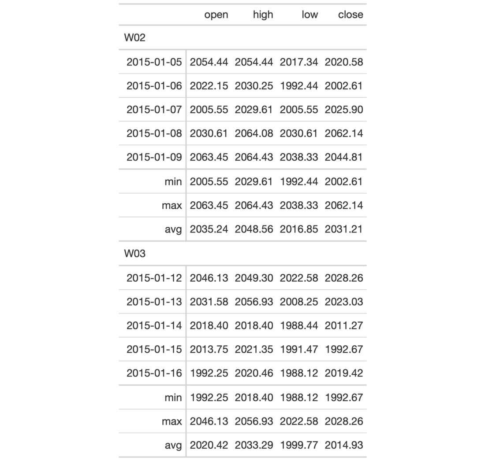

| summary_rows {gt} | R Documentation |
Add summary rows to one or more row groups by using the table data and any
suitable aggregation functions. You choose how to format the values in the
resulting summary cells by use of a formatter function (e.g, fmt_number,
etc.) and any relevant options.
summary_rows( data, groups = NULL, columns = everything(), fns, missing_text = "---", formatter = fmt_number, ... )
data |
A table object that is created using the |
groups |
The groups to consider for generation of groupwise summary
rows. By default this is set to |
columns |
The columns for which the summaries should be calculated. |
fns |
Functions used for aggregations. This can include base functions
like |
missing_text |
The text to be used in place of |
formatter |
A formatter function name. These can be any of the |
... |
Values passed to the |
Should we need to obtain the summary data for external purposes, the
extract_summary() function can be used with a gt_tbl object where summary
rows were added via summary_rows().
An object of class gt_tbl.

6-1
Other Add Rows:
grand_summary_rows()
# Use `sp500` to create a gt table with
# row groups; create summary rows (`min`,
# `max`, `avg`) by row group, where each
# each row group is a week number
tab_1 <-
sp500 %>%
dplyr::filter(
date >= "2015-01-05" &
date <="2015-01-16"
) %>%
dplyr::arrange(date) %>%
dplyr::mutate(
week = paste0(
"W", strftime(date, format = "%V"))
) %>%
dplyr::select(-adj_close, -volume) %>%
gt(
rowname_col = "date",
groupname_col = "week"
) %>%
summary_rows(
groups = TRUE,
columns = c(open, high, low, close),
fns = list(
min = ~min(.),
max = ~max(.),
avg = ~mean(.)),
formatter = fmt_number,
use_seps = FALSE
)